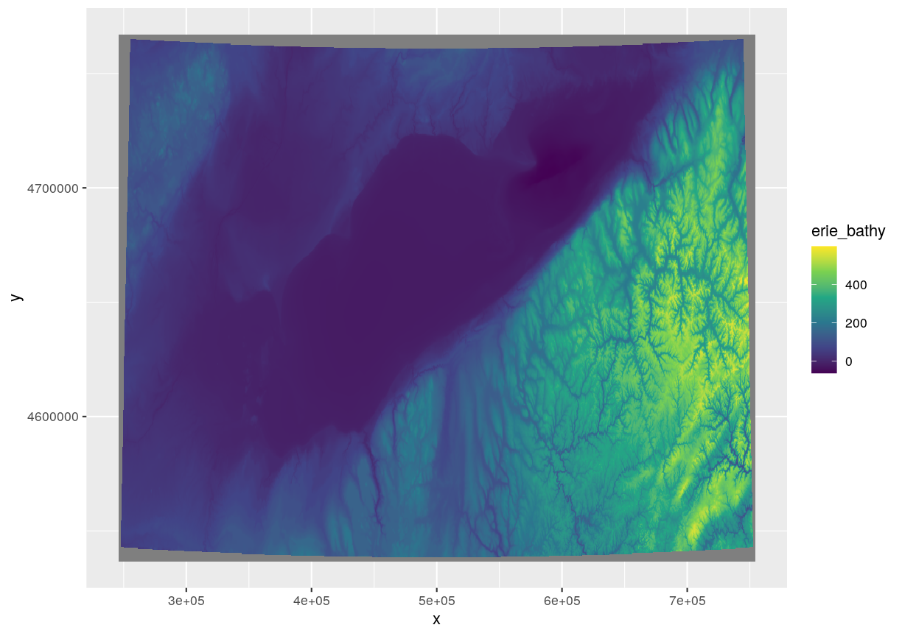
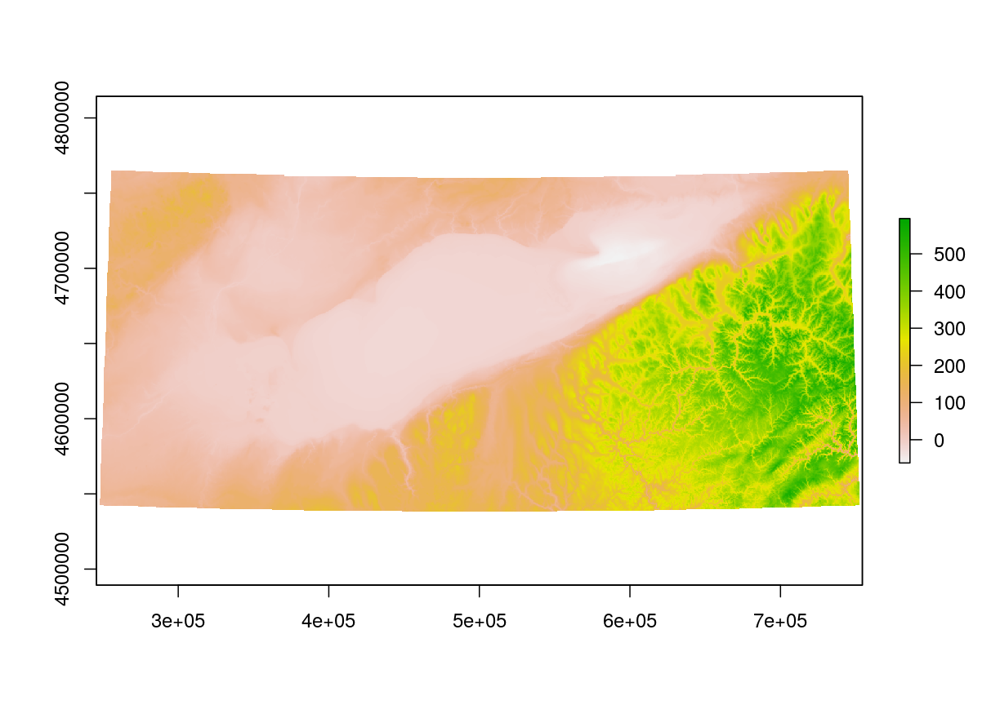
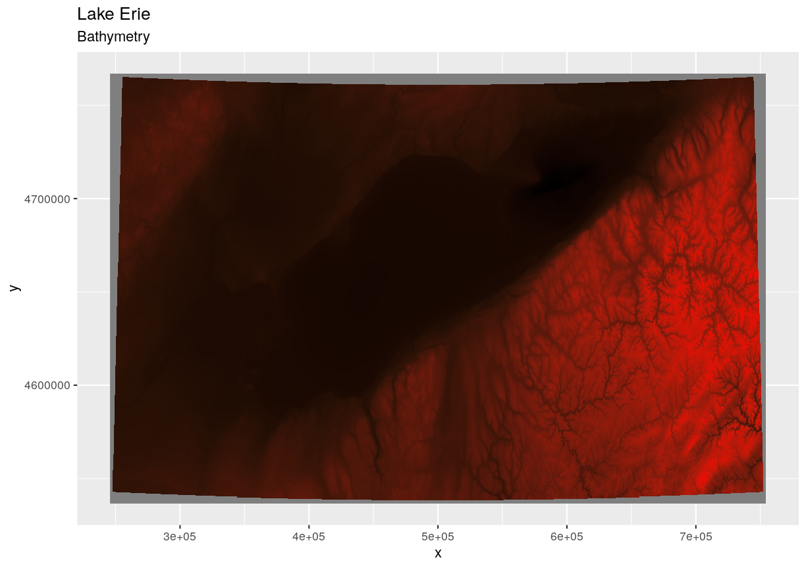
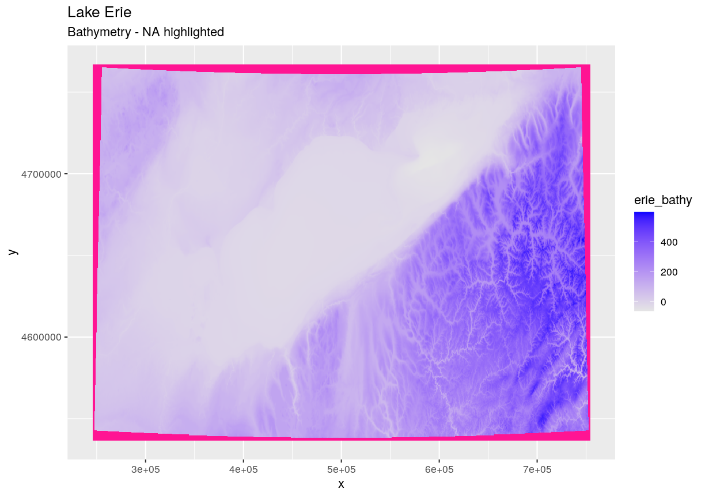
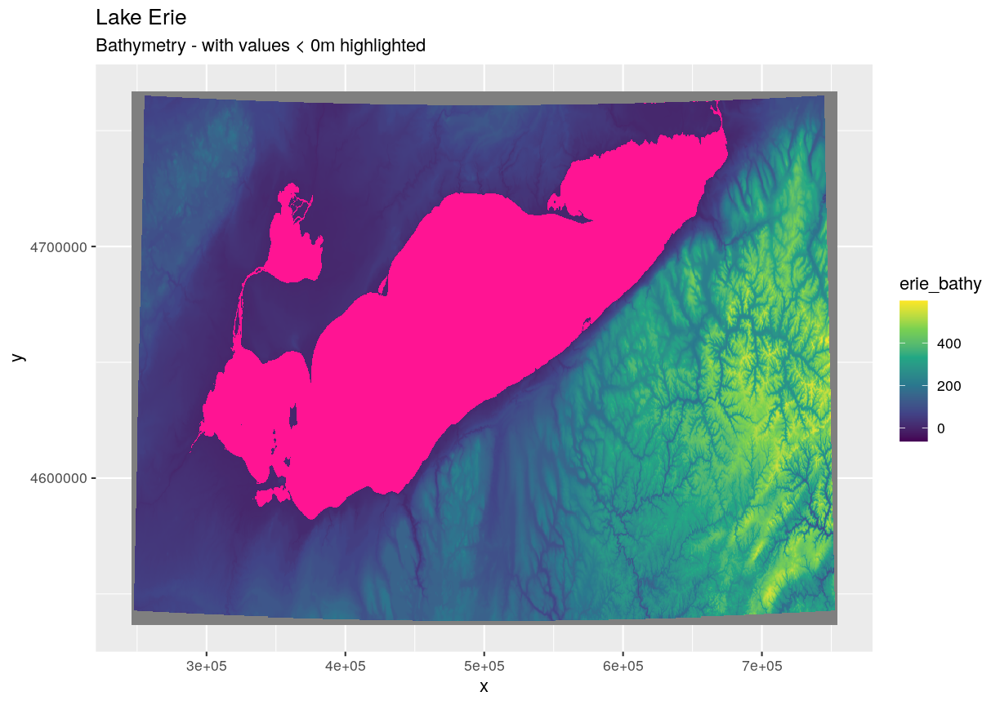
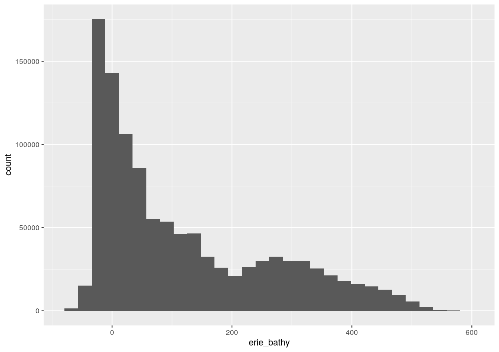
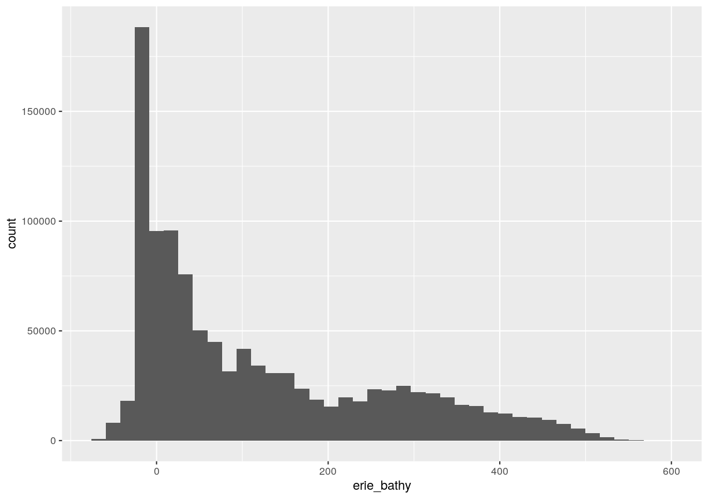

Intro to Raster Data in R
Overview
Teaching: 40 min
Exercises: 20 minQuestions
What is a raster dataset?
How do I work with and plot raster data in R?
How can I handle missing or bad data values for a raster?
Objectives
Describe the fundamental attributes of a raster dataset.
Explore raster attributes and metadata using R.
Import rasters into R using the
rasterpackage.Plot a raster file in R using the
ggplot2package.Describe the difference between single- and multi-band rasters.
Things You’ll Need To Complete This Episode
See the lesson homepage for detailed information about the software, data, and other prerequisites you will need to work through the examples in this episode.
Starting with this episode, we will be moving from working with vector data to working with raster data. In this episode, we will introduce the fundamental principles, packages and metadata/raster attributes that are needed to work with raster data in R. We will discuss some of the core metadata elements that we need to understand to work with rasters in R, including CRS and resolution. We will also explore missing and bad data values as stored in a raster and how R handles these elements.
We will continue to work with the dplyr and ggplot2 packages that were introduced
in the Introduction to R for Geospatial Data lesson. We will use two additional packages in this episode to work with raster data - the
raster and rgdal packages. Make sure that you have these packages loaded.
library(raster)
library(rgdal)
Introduce the Data
If not already discussed, introduce the datasets that will be used in this lesson. A brief introduction to the datasets can be found on the Geospatial workshop homepage.
For more detailed information about the datasets, check out the Geospatial workshop data page.
View Raster File Attributes
We will be working with a series of GeoTIFF files in this lesson. The
GeoTIFF format contains a set of embedded tags with metadata about the raster
data. We can use the function GDALinfo() to get information about our raster
data before we read that data into R. It is ideal to do this before importing
your data.
GDALinfo("data/erie_bathy.tif")
rows 623
columns 1843
bands 1
lower left origin.x 245701
lower left origin.y 4536578
res.x 276
res.y 370
ysign -1
oblique.x 0
oblique.y 0
driver GTiff
projection +proj=utm +zone=17 +ellps=GRS80 +towgs84=0,0,0,0,0,0,0 +units=m
+no_defs
file data/erie_bathy.tif
apparent band summary:
GDType hasNoDataValue NoDataValue blockSize1 blockSize2
1 Float32 TRUE -3.4e+38 1 1843
apparent band statistics:
Bmin Bmax Bmean Bsd
1 -62.47671 598.1871 NaN NaN
Metadata:
AREA_OR_POINT=Area
If you wish to store this information in R, you can do the following:
erie_bathy_info <- capture.output(
GDALinfo("data/erie_bathy.tif")
)
Each line of text that was printed to the console is now stored as an element of
the character vector erie_bathy_info. We will be exploring this data throughout this
episode. By the end of this episode, you will be able to explain and understand the output above.
Open a Raster in R
Now that we’ve previewed the metadata for our GeoTIFF, let’s import this
raster dataset into R and explore its metadata more closely. We can use the raster()
function to open a raster in R.
Data Tip - Object names
To improve code readability, file and object names should be used that make it clear what is in the file. The data for this episode were collected from Lake Erie so we’ll use a naming convention of
datatype_HARV.
First we will load our raster file into R and view the data structure.
erie_bathy <- raster("data/erie_bathy.tif")
erie_bathy
class : RasterLayer
dimensions : 623, 1843, 1148189 (nrow, ncol, ncell)
resolution : 276, 370 (x, y)
extent : 245701, 754369, 4536578, 4767088 (xmin, xmax, ymin, ymax)
crs : +proj=utm +zone=17 +ellps=GRS80 +towgs84=0,0,0,0,0,0,0 +units=m +no_defs
source : /home/jose/Documents/Science/Workshops/2020-02_glatos/glatos-spatial_workshop_materials/_episodes_rmd/data/erie_bathy.tif
names : erie_bathy
values : -62.47671, 598.1871 (min, max)
The information above includes a report of min and max values, but no other data range statistics. Similar to other R data structures like vectors and data frame columns, descriptive statistics for raster data can be retrieved like
summary(erie_bathy)
Warning in .local(object, ...): summary is an estimate based on a sample of 1e+05 cells (8.71% of all cells)
erie_bathy
Min. -62.473782
1st Qu. 1.575743
Median 63.313280
3rd Qu. 219.961578
Max. 596.867676
NA's 0.000000
but note the warning - unless you force R to calculate these statistics using
every cell in the raster, it will take a random sample of 100,000 cells and
calculate from that instead. To force calculation on more, or even all values,
you can use the parameter maxsamp:
summary(erie_bathy, maxsamp = ncell(erie_bathy))
erie_bathy
Min. -62.47671
1st Qu. 1.49860
Median 63.22672
3rd Qu. 220.23468
Max. 598.18713
NA's 64779.00000
You may not see major differences in summary stats as maxsamp increases,
except with very large rasters.
To visualise this data in R using ggplot2, we need to convert it to a
dataframe. We learned about dataframes in an earlier
lesson.
The raster package has an built-in function for conversion to a plotable dataframe.
erie_bathy_df <- as.data.frame(erie_bathy, xy = TRUE)
Now when we view the structure of our data, we will see a standard dataframe format.
str(erie_bathy_df)
'data.frame': 1148189 obs. of 3 variables:
$ x : num 245839 246115 246391 246667 246943 ...
$ y : num 4766903 4766903 4766903 4766903 4766903 ...
$ erie_bathy: num NA NA NA NA NA NA NA NA NA NA ...
We can use ggplot() to plot this data. We will set the color scale to scale_fill_viridis_c
which is a color-blindness friendly color scale. We will also use the coord_quickmap() function to use an approximate Mercator projection for our plots. This approximation is suitable for small areas that are not too close to the poles. Other coordinate systems are available in ggplot2 if needed, you can learn about them at their help page ?coord_map.
ggplot() +
geom_raster(data = erie_bathy_df , aes(x = x, y = y, fill = erie_bathy)) +
scale_fill_viridis_c()

Plotting Tip
More information about the Viridis palette used above at R Viridis package documentation.
Plotting Tip
For faster, simpler plots, you can use the
plotfunction from therasterpackage.Show plot
See
?plotfor more arguments to customize the plotplot(erie_bathy)
This map shows the elevation of our Lake Erie study area. From the legend, we can see that the maximum elevation is ~600, but we can’t tell whether this is 600 feet or 600 meters because the legend doesn’t show us the units. We can look at the metadata of our object to see what the units are. Much of the metadata that we’re interested in is part of the CRS. We introduced the concept of a CRS in an earlier lesson.
Now we will see how features of the CRS appear in our data file and what meanings they have.
View Raster Coordinate Reference System (CRS) in R
We can view the CRS string associated with our R object using thecrs()
function.
crs(erie_bathy)
CRS arguments:
+proj=utm +zone=17 +ellps=GRS80 +towgs84=0,0,0,0,0,0,0 +units=m
+no_defs
Challenge
What units are our data in?
Answers
+units=mtells us that our data is in meters.
Understanding CRS in Proj4 Format
The CRS for our data is given to us by R in proj4 format. Let’s break down
the pieces of proj4 string. The string contains all of the individual CRS
elements that R or another GIS might need. Each element is specified with a
+ sign, similar to how a .csv file is delimited or broken up by a ,. After
each + we see the CRS element being defined. For example projection (proj=)
and zone (zone=).
UTM Proj4 String
Our projection string for erie_bathy specifies the UTM projection as follows:
+proj=utm +zone=17 +ellps=GRS80 +towgs84=0,0,0,0,0,0,0 +units=m +no_defs
- proj=utm: the projection is UTM, UTM has several zones.
- zone=17: the zone is 17
- ellps=GRS80: the ellipsoid (how the earth’s roundness is calculated) for the data is GRS80
- towgs84: transformations required to align to 0,0 reference coordinate system used in the projection
- units=m: the units for the horizontal coordinates are in meters
Note that the zone is unique to the UTM projection. Not all CRSs will have a zone. Image source: Chrismurf at English Wikipedia, via Wikimedia Commons (CC-BY).
{kind=link}

Calculate Raster Min and Max Values
It is useful to know the minimum or maximum values of a raster dataset. In this case, given we are working with elevation data, these values represent the min/max elevation range at our site.
Raster statistics are often calculated and embedded in a GeoTIFF for us. We can view these values:
minValue(erie_bathy)
[1] -62.47671
maxValue(erie_bathy)
[1] 598.1871
Data Tip - Set min and max values
If the minimum and maximum values haven’t already been calculated, we can calculate them using the
setMinMax()function.erie_bathy <- setMinMax(erie_bathy)
We can see that the elevation at our site ranges from -62.4767075m to 598.1871338m.
Raster Bands
The Digital Surface Model object (erie_bathy) that we’ve been working with is a
single band raster. This means that there is only one dataset stored in the
raster: surface elevation in meters for one time period.

A raster dataset can contain one or more bands. We can use the raster()
function to import one single band from a single or multi-band raster. We can
view the number of bands in a raster using the nlayers() function.
nlayers(erie_bathy)
[1] 1
However, raster data can also be multi-band, meaning that one raster file
contains data for more than one variable or time period for each cell. By
default the raster() function only imports the first band in a raster
regardless of whether it has one or more bands. Jump to a later episode in
this series for information on working with multi-band rasters:
Work with Multi-band Rasters in R.
Dealing with Missing Data
Raster data often has a NoDataValue associated with it. This is a value
assigned to pixels where data is missing or no data were collected.
By default the shape of a raster is always rectangular. So if we have a dataset
that has a shape that isn’t rectangular, some pixels at the edge of the raster
will have NoDataValues. This can happen if the data were collected by an
airplane which only flew over some part of a defined region.
In the image below, no pixels are black meaning we have data for every raster “cell”.

If your raster has NA values but you aren’t sure where they are, you can deliberately plot them in a particular colour. This can be useful when checking a dataset’s coverage. For instance, sometimes data can be missing where a sensor could not ‘see’ its target data, and you may wish to locate that missing data and fill it in.
To highlight NA values in ggplot, alter the scale_fill_*() layer to contain a colour instruction for NA values, like scale_fill_viridis_c(na.value = 'deeppink')

The value that is conventionally used to take note of missing data (the
NoDataValue value) varies by the raster data type. For floating-point rasters,
the figure -3.4e+38 is a common default, and for integers, -9999 is
common. Some disciplines have specific conventions that vary from these
common values.
In some cases, other NA values may be more appropriate. An NA value should
be a) outside the range of valid values, and b) a value that fits the data type
in use. For instance, if your data ranges continuously from -20 to 100, 0 is
not an acceptable NA value! Or, for categories that number 1-15, 0 might be
fine for NA, but using -.000003 will force you to save the GeoTIFF on disk
as a floating point raster, resulting in a bigger file.
If we are lucky, our GeoTIFF file has a tag that tells us what is the
NoDataValue. If we are less lucky, we can find that information in the
raster’s metadata. If a NoDataValue was stored in the GeoTIFF tag, when R
opens up the raster, it will assign each instance of the value to NA. Values
of NA will be ignored by R as demonstrated above.
Challenge
Use the output from the
GDALinfo()function to find out whatNoDataValueis used for ourerie_bathydataset.Answers
GDALinfo("data//erie_bathy.tif")rows 623 columns 1843 bands 1 lower left origin.x 245701 lower left origin.y 4536578 res.x 276 res.y 370 ysign -1 oblique.x 0 oblique.y 0 driver GTiff projection +proj=utm +zone=17 +ellps=GRS80 +towgs84=0,0,0,0,0,0,0 +units=m +no_defs file data//erie_bathy.tif apparent band summary: GDType hasNoDataValue NoDataValue blockSize1 blockSize2 1 Float32 TRUE -3.4e+38 1 1843 apparent band statistics: Bmin Bmax Bmean Bsd 1 -62.47671 598.1871 NaN NaN Metadata: AREA_OR_POINT=Area
NoDataValueare encoded as -3.4e+38.
Bad Data Values in Rasters
Bad data values are different from NoDataValues. Bad data values are values
that fall outside of the applicable range of a dataset.
Examples of Bad Data Values:
- The normalized difference vegetation index (NDVI), which is a measure of greenness, has a valid range of -1 to 1. Any value outside of that range would be considered a “bad” or miscalculated value.
- Reflectance data in an image will often range from 0-1 or 0-10,000 depending upon how the data are scaled. Thus a value greater than 1 or greater than 10,000 is likely caused by an error in either data collection or processing.
Find Bad Data Values
Sometimes a raster’s metadata will tell us the range of expected values for a raster. Values outside of this range are suspect and we need to consider that when we analyze the data. Sometimes, we need to use some common sense and scientific insight as we examine the data - just as we would for field data to identify questionable values.
Plotting data with appropriate highlighting can help reveal patterns in bad values and may suggest a solution. Below, reclassification is used to highlight elevation values less than 0m with a contrasting colour.

Create A Histogram of Raster Values
We can explore the distribution of values contained within our raster using the
geom_histogram() function which produces a histogram. Histograms are often
useful in identifying outliers and bad data values in our raster data.
ggplot() +
geom_histogram(data = erie_bathy_df, aes(erie_bathy))
`stat_bin()` using `bins = 30`. Pick better value with `binwidth`.
Warning: Removed 64779 rows containing non-finite values (stat_bin).

Notice that a warning message is thrown when R creates the histogram.
stat_bin() using bins = 30. Pick better value with binwidth.
This warning is caused by a default setting in geom_histogram enforcing that there are
30 bins for the data. We can define the number of bins we want in the histogram
by using the bins value in the geom_histogram() function.
ggplot() +
geom_histogram(data = erie_bathy_df, aes(erie_bathy), bins = 40)
Warning: Removed 64779 rows containing non-finite values (stat_bin).

Note that the shape of this histogram looks similar to the previous one that was created using the default of 30 bins. The distribution of elevation values for our Bathymetry data looks reasonable. It is likely there are no bad data values in this particular raster.
More Resources
Key Points
The GeoTIFF file format includes metadata about the raster data.
To plot raster data with the
ggplot2package, we need to convert it to a dataframe.R stores CRS information in the Proj4 format.
Be careful when dealing with missing or bad data values.